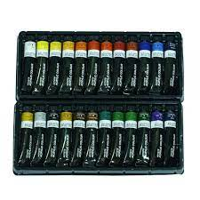

Paints is any liquid material which give color and texture to the object. When you apply the colourfull paint on your object,it looks beautiful. Paints are also used by artist for buisiness purpose. It is use to paint walls of houses, furniture, cars,metal object, canvases,etc. There are three types of paint given below
Primary colors
Water colors are use to paint gouache or paper sheets. Art beginners are prefer watercolor because it is easy to paint on sheets and looks so beautiful. Watercolor needs water for mixing well and give nice texture to it.
Acrylic paints are fast drying paint and are mainly use on canvases but you can also paint other objects like glasses,metals,pods, etc. It works on many objects and make it more beautiful than before.Artists use this color for buisiness purpose and sell the canvas painting on different platform.
Oil paints are slow drying paints and takes much time to paint. They are very difficult to paint than watercolor and acrylic paint. It is used by professional Artist to paint on canvases. It comes out very beautiful on canvas.